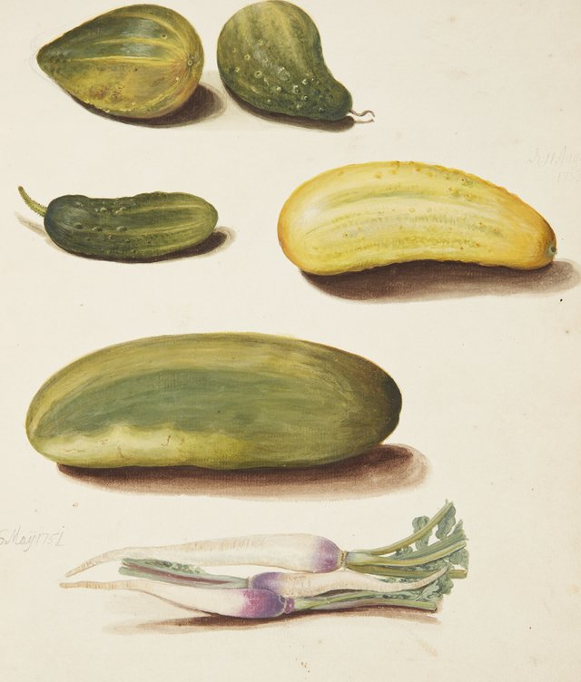

|
Professor of Public Administration I work to make the field of public administration more experimental, more integrated with neighboring fields, and more engaged in solving real-world problems. I study how citizens form inferences about public services, how performance data shape those inferences, and the role of honesty and discrimination in citizen-state interactions. ”Diversifying the Bureaucracy of Tomorrow: Role Models and the Educational Pipeline” (with Josephine Arnfred and Merlin Schaeffer). ”Global Beliefs about Women in Top-Level Bureaucracy: Misperception, Corrections and Support for Representation” (with Josephine Arnfred). ”What Parents Learn in School” (with Anders Woller). ”The Downstream Effects of Facts: A Field Experiment on 12 Noncontentious Issues”. ”Correcting Crime Misperceptions with Statistics? Evidence from two Field Experiments in Online Local Media” (with Anders Woller).  Johanna Fosie, Studie af grøntsager, 1750-1751. |
”Public Administration Beyond Public Administration Journals”. PS: Political Science & Politics (with Karl-Emil Bendtsen and Paul van Leeuwen). ”The future of a scattered field: Challenges and opportunities”. Futures for the Public Sector. ”Correcting Misperceptions about Ethno-Racial Discrimination: The Limits of Evidence-Based Awareness Raising to Promote Support for Equal-Treatment Policies.” American Journal of Political Science (with Merlin Schaeffer and Krzysztof Krakowski). ”The Unequal Distribution of Opportunity: A National Audit Study of Bureaucratic Discrimination in Primary School Access.” American Journal of Political Science (with Jonas Høgh Kyhse-Andersen and Donald Moynihan). ”Moral Dilemmas and Trust in Leaders during a Global Health Crisis.” Nature Human Behaviour (with team led by Jim A. C. Everett, Clara Colombatto and Molly J. Crockett). ”Sustaining Honesty in Public Service: The Role of Selection.” American Economic Journal: Economic Policy (with Sebastian Barfort, Nikolaj A. Harmon and Frederik Hjorth). ”Behavioral Dishonesty in the Public Sector.” Journal of Public Administration Research and Theory (with Sebastian Barfort, Nikolaj A. Harmon and Frederik Hjorth). ”Reducing Bias in Citizens Perception of Crime Rates: Evidence From a Field Experiment on Burglary Prevalence.” Journal of Politics (with Martin Vinæs Larsen). ”Behavioral Public Performance: How People Make Sense of Government Metrics.” Cambridge University Press (with Oliver James, Donald P. Moynihan and Gregg G. Van Ryzin). ”Compared to What? How Social and Historical Reference Points Affect Citizens’ Performance Evaluations.” Journal of Public Administration Research and Theory. ”Behavioral Public Administration: Combining Insights from Public Administration and Psychology.” Public Administration Review (with Stephan Grimmelikhuijsen, Sebastian Jilke and Lars Tummers). |